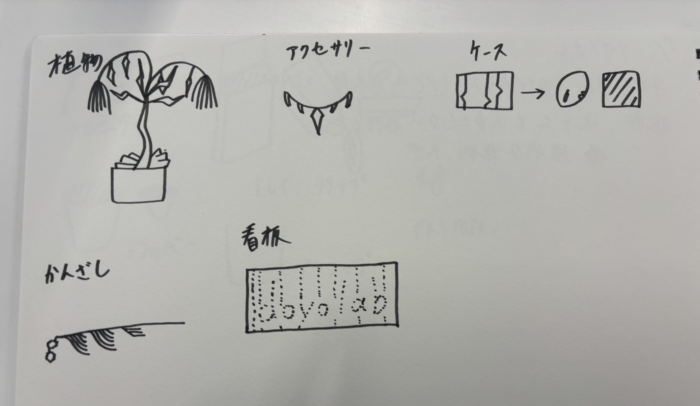
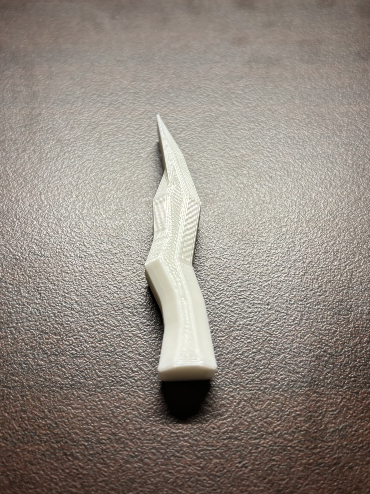
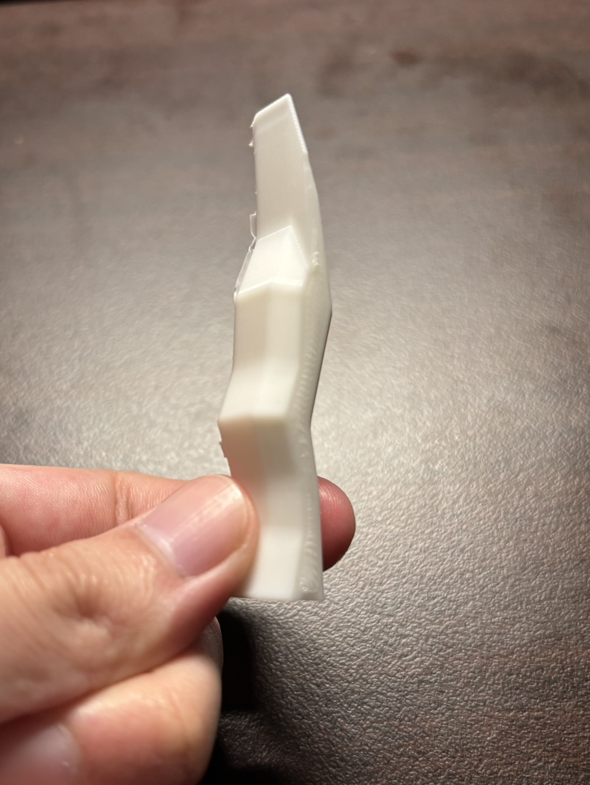

ペレットで3Dプリント
廃棄されるクリアファイルをサーキュラーの視点で再利用する方法を考える上で、
①クリアファイルを原料に戻さずそのまま利用する
②原料ペレットに戻して、3Dプリンターで新しく作成する
この２通りの手順が考えられました。
私ぶっちーは②の軸で作業を進めていくことにしました。
テーマ決め
3Dプリンターで作製していくに当たって、どういった物・デザインにするか
アイデアをすり合わせていきました。
すり合わせの結果、「植物」「アクセサリー」「アメニティ」など様々な案が出されました。

↑こちらは私ぶっちーのデザインイメージです。
印刷
いきなり再生フィラメントで印刷する前に、いつもの3Dプリンターで印刷が
うまくいくか確かめます。
↓仮のモデルを作成して印刷↓


サイズが小さいからなのか、角ばった形がはっきりしなかったです。